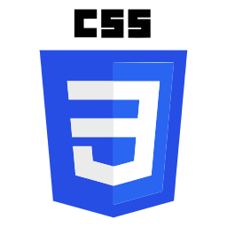

Creative Services
Websites
Mobile-first UI / UX


Logo comp for cruisesoon. No design brief so I went for a simple graphic made up from the golden ratio rule, along with blues to provoke both the sea, and trust.
Logo comp for cruisesoon. No design brief so I went for a simple graphic made up from the golden ratio rule, along with blues to provoke both the sea, and trust.
My name is Rikk Ogden and I've been a self-trained digital creative and website designer for over a decade.
Having a passion for design and technology, my quest is to continue to grow as a front-end developer.
My favourite colour is purple.
Download my CV Format: PDF | File size: 100kb
For 19 years I worked for a UK travel company, Chadwell Travel Ltd. Trading as a1travel (initially trading as 'Premier Leisure'). I started out as a holiday salesman. After a few years it was clear that we needed a web presence. Having an art background, and a passion for design and technology, I propsed that the company gave me the chance to build the company website.
I bought a book on HTML and after a couple of months I had created the company's very first website, and so began my journey to becoming a web professional.
Over the course of the next decade I would continue to grow and evolve the website. From it's beginnings as premier-leisure.com - a simple website with a framed third-party ecommerce solution, to a rebrand into a1travel.com which became the main company sales platform, and a successful online-bookable travel agency.
Over the site's evolution, my responsibilities included all design and front-end development, some back-end development using classic ASP and MS SQL and eventually project managing outsourced .NET back-end development, whilst maintaining responsive design, front-end dev, some dynamic ASP driven landing pages using both XML and CMS solutions, and email marketing responsibilities.I would also be responsible for two other sister websites; Bargainholidaysonline, and
Due to the volatile nature of the industry, on October 20th 2017, the company went into liquidation and I found myself in the unfortunate position of being made redundant.
Finding myself without a job and in open waters I began to do some research and I realised that over the course of the last few years I had stagnated a little. I found myself in the position of feeling adrift in a sea of new technology.
To that end I spent the time between October 20th 2017 and the end of December 2017 researching and adapting to the modern workflow and integrating into my own methodologies.
Having been a jack-of-all-trades for a number of years, my aim is to focus on specialising into front-end development and seek a position in a workplace that will embrace my hard-working, loyal and enthusiastic work ethic, whilst allowing me to grow and improve. I'm most excited about learning React.js, building single-page apps / front-ends and keeping current with the ever evolving technology and practices.
I'm currently spending my time researching and brushing up on my core skillset, vanilla JS, and delving into the world of node.js and react.'